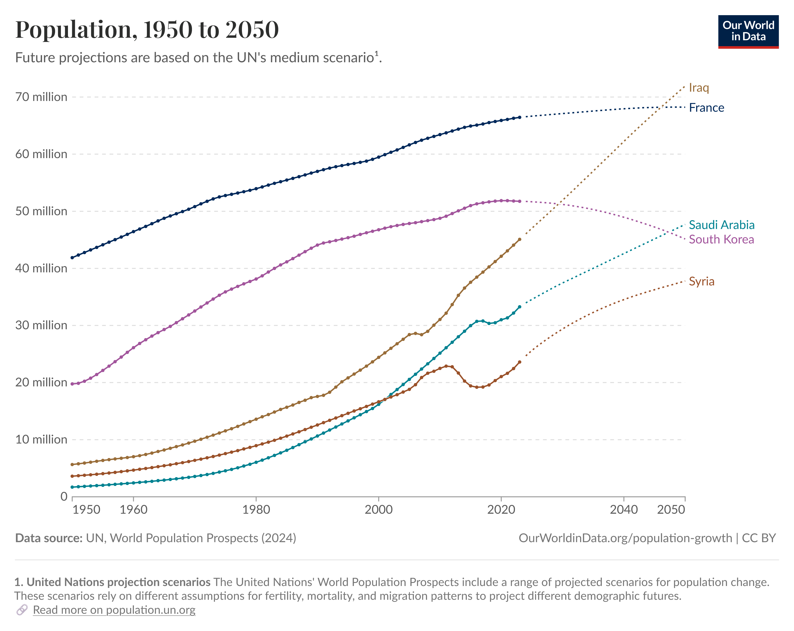
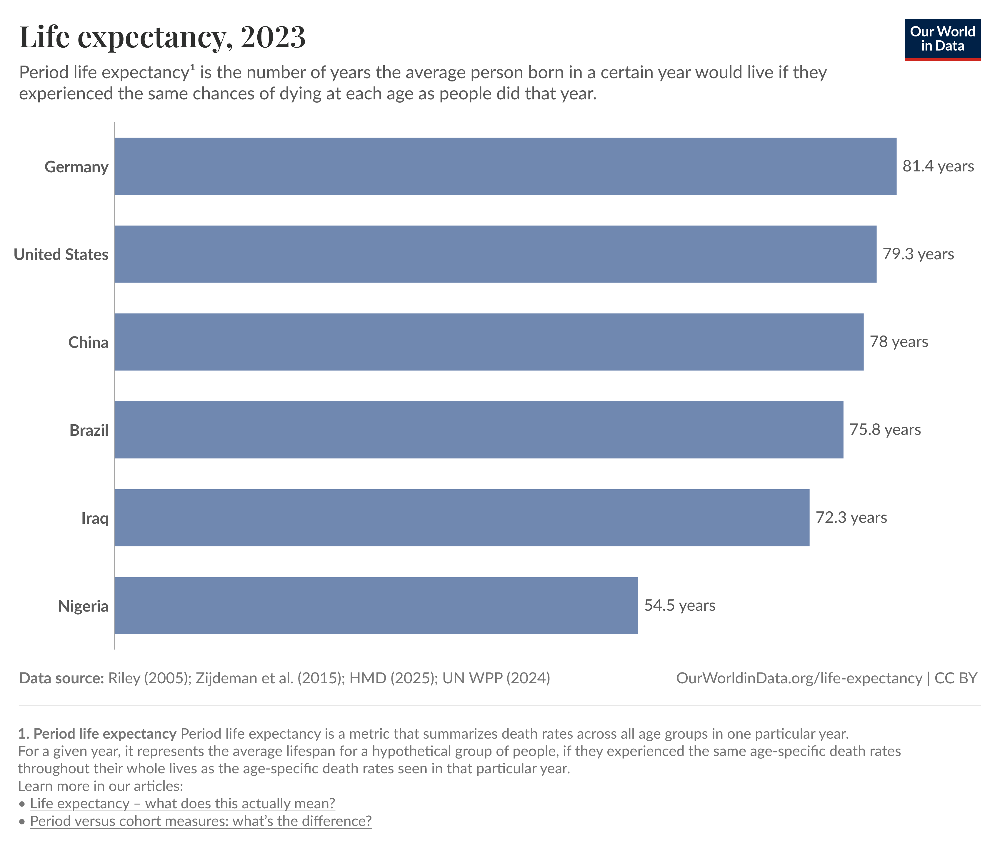
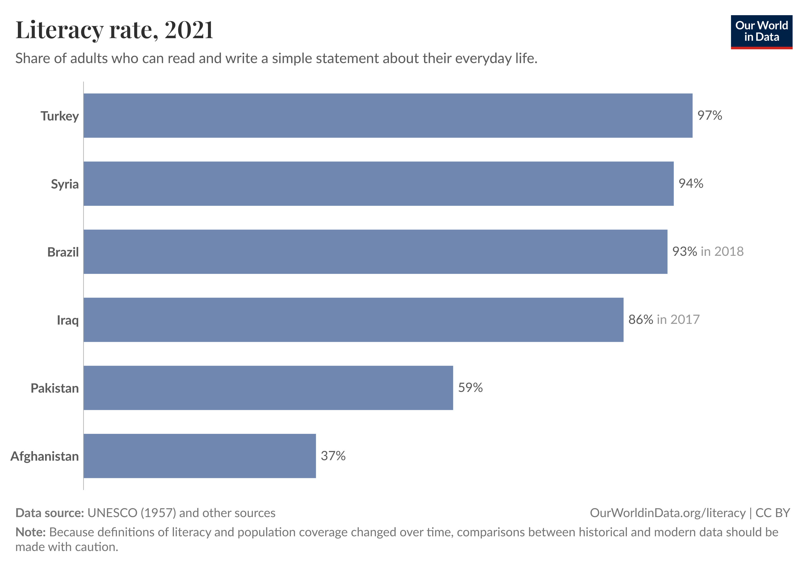
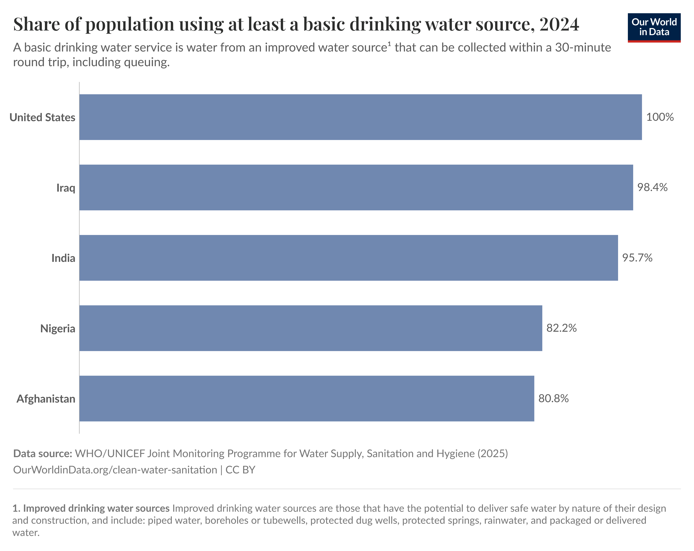
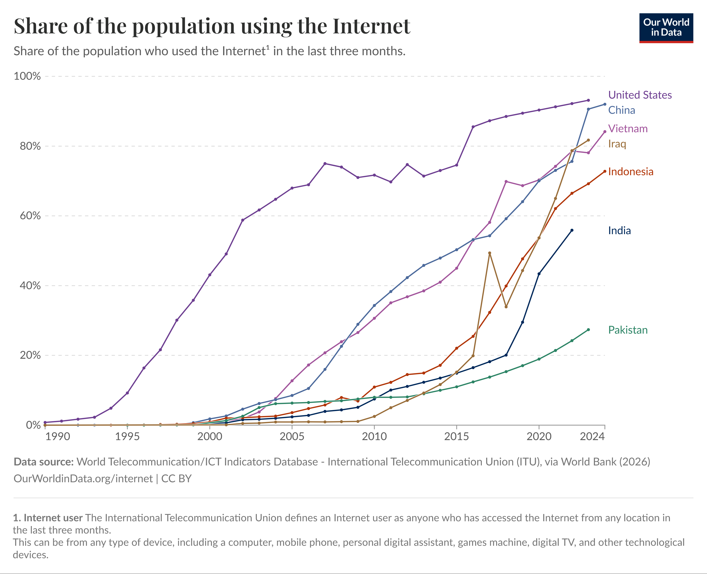
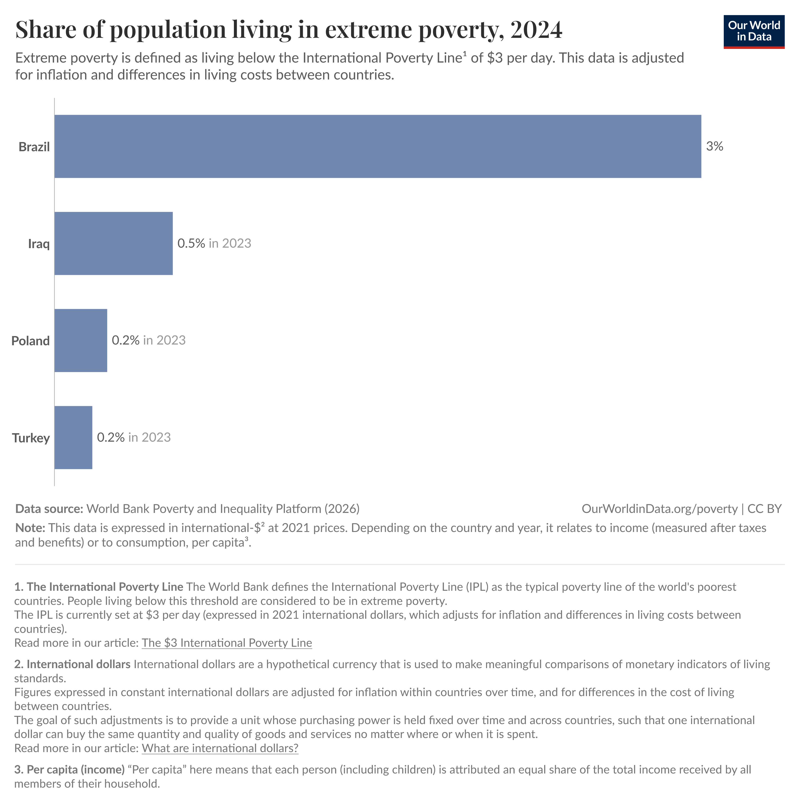
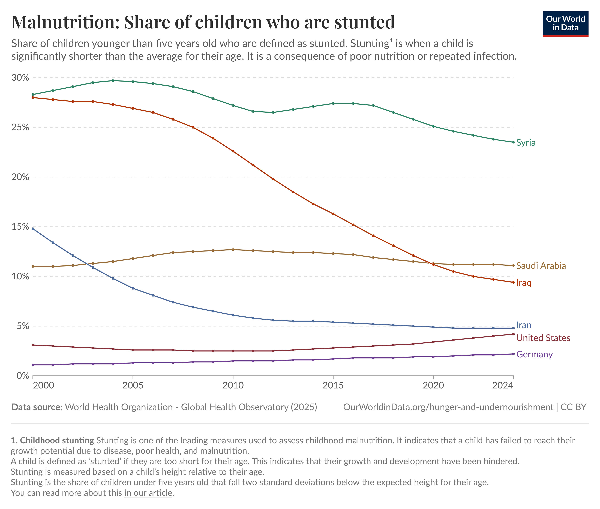

Founded
30 July 762by Caliph al-Mansur
Eleven distinct eras, each with its own ruling group, dominant languages, and ethnic composition. Selecting an era reveals its population, composition, and the events that shaped it.
Centuries of slow growth or stagnation are repeatedly cut short by demographic catastrophes. The 1258 sack alone collapsed a global metropolis to a provincial town for over five centuries.
Pre-modern figures are scholarly estimates. Post-1917 figures derive from Ottoman Salnames, Iraqi censuses (1947, 1957, 1977, 1987, 1997), and modern projections. Vertical scale is logarithmic to render both the 10th-century zenith and the 19th-century trough on the same plane.
UN comparable urban-centre series, 1979 to present
Modern series from United Nations DESA, World Urbanization Prospects. The 2025 Revision, table WUP2025-F21-DEGURBA-Cities_Pop. Values use the UN Degree of Urbanization urban-centre definition and are shown as mid-year population. The 2026 value is a UN projection.
Combined population series, 762 to 2026
This combined view uses the long-arc historical series through 1977, then switches to the UN WUP 2025 Degree of Urbanization urban-centre series for 1979 to 2026. The small break around 1979 marks a change in population definition, not a documented collapse.
Every photo card is interactive. Click the card, or use the visible expand control, to open the full arc from arrival to peak to displacement or persistence.
Long before census takers cared about denominations, the geography of Baghdad encoded the Sunni and Shia split. Karkh and Rusafa, Kadhimiya and Adhamiya, Sadr City and the Green Zone. Each pair carries the imprint of a specific historical decision about who governs and who prays where.
Numbers before the late Ottoman period are scholarly reconstructions. Numbers after 1900 draw on Ottoman Salnames, Iraqi censuses (1947, 1957), and post-2003 Ministry of Planning estimates.
Each bar is one era. Width of each color shows the approximate share of Sunni, Shia, and non-Muslim residents within the city.
Under Buyid (Shia, Persian) patronage from 946, the western Karkh district consolidates as the city's Shia commercial heart. The eastern Bab al-Basra quarter remains predominantly Sunni. Through the late 10th and 11th centuries the two halves erupt into recurring riots over public mourning processions for Husayn, control of mosques, and rival claims to legitimacy. These are arguably the first sustained, neighborhood-level Sunni and Shia street battles in any major Islamic capital.
The Sunni Seljuks displace the Buyids in 1055. Vizier Nizam al-Mulk founds the Nizamiyya college in 1067 to train Sunni jurists against Shia influence. Al-Ghazali teaches there. Shia institutions retreat from public visibility in central Baghdad. They consolidate instead around the Kadhimiya shrine on the city's northwest edge. The pattern of containment rather than eradication survives the Mongol period intact.
The Mongol Ilkhanate (until Ghazan's 1295 conversion) shows no inherited preference between Sunni and Shia. Shia learning in Najaf, Karbala, and Kadhimiya enjoys a century of state neutrality. This builds the institutional base that allows the Twelver Shia Kara Koyunlu (1410 to 1468) to patronize Shia ritual openly. The Sunni Ak Koyunlu reverse the policy after 1468. The whiplash sets the template for the centuries to come.
Shah Ismail I captures the city in 1508 and declares Twelver Shi'ism the official faith of the Iranian state. The shrine cities are reframed as sacred geography. Ottoman Suleiman the Magnificent retakes the city in 1534 and rebuilds the Sunni monuments the Safavids had defaced. Shah Abbas I reconquers it in 1623. Sunnis are killed or enslaved. Sunni mosques are destroyed.
In 1638 Sultan Murad IV permanently expels the Safavids after a brutal siege. He then conducts widespread reprisal massacres against the city's Shia inhabitants. This 130 year contestation institutionalizes sectarian violence as a normal instrument of imperial statecraft. It also embeds a Sunni administrative and Shia marginal architecture into Baghdad that will not be loosened until 2003.
Under stable Ottoman rule, the Sunni minority of Iraq monopolizes provincial government, military command, waqf endowments, and the lucrative tax farming of southern lands. The Shia majority lives mostly in the rural south and the shrine cities. They are excluded from administration as a matter of policy. The Shia of Baghdad cluster around Kadhimiya. Najaf and Karbala absorb migrants pushed off the land. The wealth gap between the Sunni urban elite and the Shia rural poor compounds for ten generations.
The British "Sharifan Solution" of 1921 places King Faisal I, a Sunni Arab from the Hejaz, over a country whose population is roughly 55% Shia. The colonial administration relies on ex-Ottoman Sunni officers and views the Shia mujtahids as a backward theocratic obstacle. Shia exclusion from the new Iraqi state is codified.
British land policy hands rural southern Iraq to tribal sheikhs as absentee landlords, reducing Shia peasants to landless sharecroppers. From the 1930s onward, dispossessed Shia Madan (Marsh Arabs) and other rural southerners migrate to Baghdad's eastern outskirts and build sprawling shantytowns of mudbrick and reed huts called sarifas. Pre-WWI the Shia were around 20% of the city. By 1958 they exceed 50%.
After the 1958 republican revolution, Prime Minister Abd al-Karim Qasim builds Madinat al-Thawra (Revolution City) to absorb the eastern slums. It is renamed Saddam City under the Ba'ath, then Sadr City after 2003. It becomes home to over two million impoverished Shia residents. This is an electoral and militant center of gravity that no Iraqi government will be able to ignore again.
Ba'athist secularism and oil money fund a city of mixed neighborhoods. Mansour, Karkh, Karrada, and Adhamiyah become genuinely heterogeneous. By 2003, around 20% of Baghdadis descend from sectarian intermarriage. Beneath this, the regime's inner circle, security apparatus, and military command are overwhelmingly Sunni Tikriti. The 1991 Shia uprising in the south is crushed with extraordinary violence. Shia clerical networks are penetrated and assassinated. The architecture of exclusion is preserved beneath a secular veneer.
The CPA's de-Ba'athification and disbandment of the army collapse the Sunni administrative class. Many Sunnis read this as "de-Sunnification". Shia parties returning from exile take the Ministry of Interior and integrate the Badr Brigade and other militias into the security apparatus. Sunni insurgency, including Al-Qaeda in Iraq, retaliates with mass casualty attacks.
The February 2006 bombing of the Al-Askari shrine in Samarra triggers full sectarian war. Muqtada al-Sadr's Mahdi Army, operating out of Sadr City, conducts block-by-block ethnic cleansing. Hurriya, once a model mixed neighborhood, is emptied of Sunnis. Adhamiyah, a historic Sunni stronghold on the eastern bank, becomes a besieged enclave surrounded by Shia territory. By 2008, 1.6 million Iraqis are displaced. Coalition T-walls institutionalize the new map.
By 2024 Iraqi Ministry of Planning estimates place Baghdad at 80% to 82% Shia and 17% to 19% Sunni Arab. The eastern bank of the Tigris is Shia dominated. The western bank was once the historic seat of Sunni power. It is now mixed but partitioned. Kadhimiya is exclusively Shia and a religious tourism hub. Adhamiya remains a Sunni island. Mixed marriages have collapsed. Voting and residential choice remain stubbornly communal. Iraq's first census in nearly four decades (2024) deliberately omits sectarian and ethnic questions. The state has formally chosen not to know its own composition.
Baghdad's sectarian story is also a district story. Kadhimiya marks the northwestern Shia shrine zone, Adhamiya the historic Sunni enclave, Sadr City the vast eastern Shia working-class district, and Dora the southern mixed district where Christian and Sunni communities were heavily displaced.
The before-and-after map shows the collapse of mixed Sunni-Shia neighborhoods during the civil war. Yellow mixed areas shrink, blue mostly Shia zones expand across much of eastern Baghdad, red mostly Sunni districts harden into enclaves, and bombing locations track the violent process of separation.
Side-by-side Sunni, Shia, and Christian shares for six Baghdad districts, comparing 2003 with the post-2008 settlement.
Baghdad's diversity has rarely declined gradually. It has been collapsed, repeatedly, by discrete events whose effects compound across centuries.
Hulagu Khan's forces breach the walls and execute the Caliph. The Arab and Persian intellectual elite are annihilated. Irrigation works around the city are systematically destroyed, foreclosing recovery.
Timur (Tamerlane) inflicts a second mass killing on the surviving population, erecting towers of skulls. Any nascent recovery from the Mongol period is permanently stunted.
Sultan Murad IV's recapture from the Safavids inaugurates 280 years of Sunni-Ottoman administration over a Shia-majority hinterland. It entrenches a structural sectarian division that persists to this day.
An overlapping plague outbreak, Tigris flood, and famine collapses the city from ~80,000 toward 65,000. The 19th-century population stays virtually static for forty years.
A state-tolerated pogrom against the Jewish quarter destroys hundreds of homes and kills hundreds. Between 1950 and 1952, ~95% of Iraq's Jews depart in Operation Ezra and Nehemiah.
The dismantling of the Ba'athist state ignites a civil conflict that physically partitions Baghdad along Sunni-Shia lines. Christians collapse from ~150,000 in Dora to ~1,500. Mixed neighborhoods cease to exist.
Iraq Body Count's monthly maximum-recorded-killed series captures the post-2003 surge, the 2006-2007 sectarian war, the 2014 ISIS shock, and the much lower violence levels of the 2020s. Baghdad remains central to the story, but the province-level monthly series in this file ends in February 2017.
Maximum recorded killed by month, 2003 to 2026
Source is Iraq Body Count, Maximum recorded killed from 2003 to 2026 by month, compiled 9 May 2026. The chart uses dataset 1 where confirmed all-Iraq values exist, dataset 2 for preliminary all-Iraq values after February 2017, and dataset 3 for Baghdad province where present.
These Our World in Data charts show the quieter story behind the violence curve. The indicators point to longer lives, broader literacy, near-universal basic water access, rapid internet adoption, low measured extreme poverty, and falling child stunting.

The UN medium scenario shows Iraq moving above 70 million people by 2050. That projection points to recovery, urban demand, and future national scale. Prosperity will still depend on jobs, housing, schools, water, and electricity.
The practical question is whether jobs, housing, schools, water, and electricity can keep up with that growth.

Iraq's 2023 life expectancy is 72.3 years. It is below Germany, the United States, China, and Brazil, but far above Nigeria's 54.5 years in the same chart.
For a country that experienced sanctions, invasion, insurgency, civil war, and ISIS, this is a significant sign of underlying health-system and living-standard resilience.

Iraq's adult literacy rate is shown at 86% in 2017. It trails Turkey, Syria, and Brazil in this comparison, but stands well above Pakistan and Afghanistan.
Literacy is the floor under later improvement. It supports public health messaging, digital access, labor mobility, and the ability to navigate state services.

Iraq is shown at 98.4% in 2024 for access to at least a basic drinking water source. That is close to the United States in this chart and above India, Nigeria, and Afghanistan.
This does not mean water quality, reliability, and regional equity are solved. It does mean the baseline of basic access is much stronger than many people assume.

The internet chart shows Iraq rising rapidly in the 2010s and 2020s, reaching roughly four-fifths of the population by the latest point.
This expands access to schools, banks, doctors, small businesses, job networks, media, and diaspora ties.

Iraq is shown at 0.5% in 2023 for the share of people living below the $3-a-day international poverty line. In this comparison, Brazil is much higher at 3%.
This does not eliminate unemployment, corruption, inequality, housing stress, or public-service failures. It does show that the very bottom tail of international-dollar deprivation is small in this dataset.

Iraq's stunting line drops from the high-20% range around 2000 to below 10% by 2024. That is a major improvement in early-childhood welfare.
The remaining level still matters. Iraq is above high-income countries in this chart, so the improvement is real but unfinished.
Life expectancy is above 72 years, and child stunting has fallen hard since 2000.
Water access is near universal, and adult literacy is high enough to support further gains.
Internet adoption is now mainstream, and measured extreme poverty is low in the comparison chart.